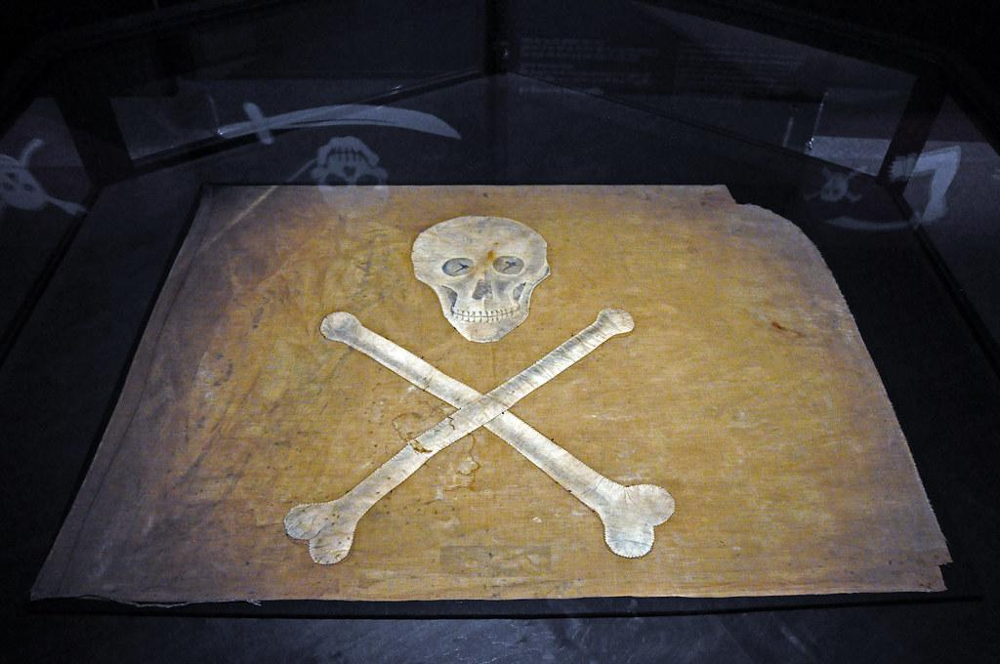
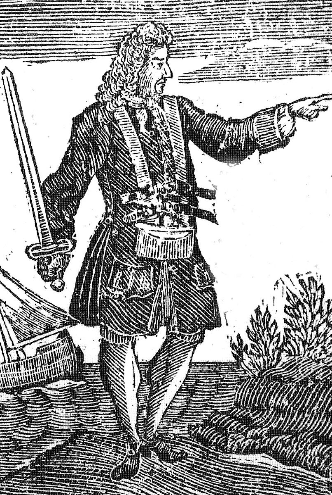
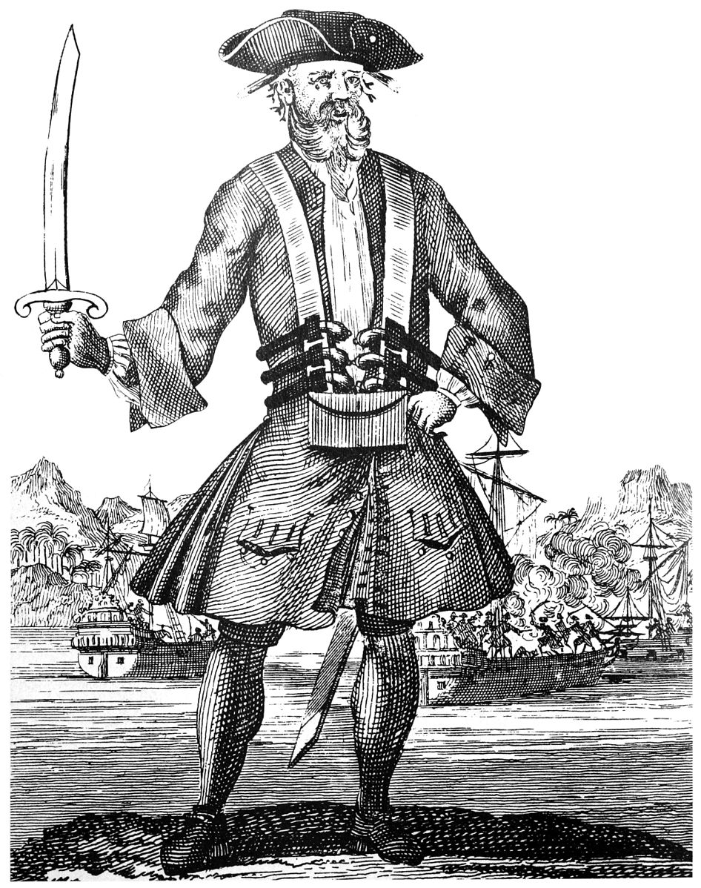

A Plethora of Pirates

Booming, yes, but peaceful? No. Over the course of the end of the seventeenth century and the beginning of the eighteenth century, the desirable location combined with ineffective civic leadership resulted in several incursions by both the Spanish and the French to assume control. In the midst of this turmoil, Nassau became a favorite haunt for pirates. So prevalent were pirates that the Bermuda government at the time presumed that the population of pirates outnumbered the permanent residents of the city.
A Golden Age
The port of Nassau came about during what is known as the “Golden Age of Pirates,” when piracy in the New World was at its height. Encouraged by the rise of European colonies and the wealth of resources accessible therein, both privateers (those hired to protect merchandise) and pirates ruled. In fact, in 1706, Nassau was declared a “Republic of Pirates,” by Captain Benjamin Hornigold, who had by the time established himself as one of the most profitable pirates of the region and wanted to secure the area as a stronghold for pirate trade. Nassau remained such a republic until 1718. They kept order not with political officials but by following the pirate code, which encouraged fair use of the port and equal division of spoils acquired.
Bountiful Boats

The bevy of pirates that filled Nassau port brought with them an array of elegant sloops and sailing ships whose masts would break the skyline of the harbor. Some of the most iconic one might find in the port included:
Queen Anne’s Revenge: the ship beloved by Blackbeard (Edward Teach, noted above), this vessel was most likely originally built to serve as an English merchant ship. Blackbeard captured it, though, in 1717, but was only able to take advantage of it for about a year (at which point he ran it aground)
Charles Vane (1680 - 1721)
Born in England, Vane entered a career in piracy by embarking on a voyage with Henry Jennings. By the mid 1710s, Vane was one of Nassau’s most notorious pirates renowned for his vicious cruelty.
Edward Teach (c. 1680-1718)
Better known as “Blackbeard,” Teach purportedly launched his career in piracy by plundering ships along the eastrn coast of North America. He teamed up with Captain Benjamin Hornigold to become a central figure in Nassau and was so named for his rumored thick black beard.
Jack Rackam (1680-1720)

Also known as “Calico Jack,” Rackam was one of the fiercest pirates in the regions of the Bahamas and Cuba. Famous in part for his relationship with his female crewmate (and mistress) Anne Bonney, he also was known for ousting Charles Vane from his role as captain on his sloop, Ranger, that was often seen in Nassau port.